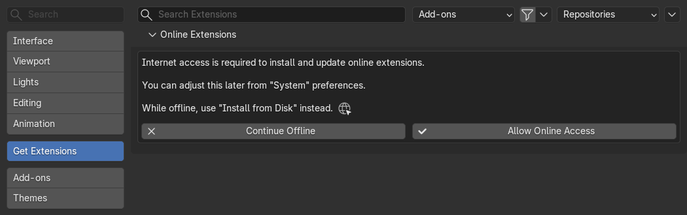
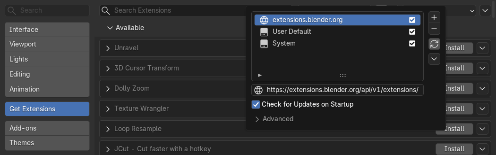
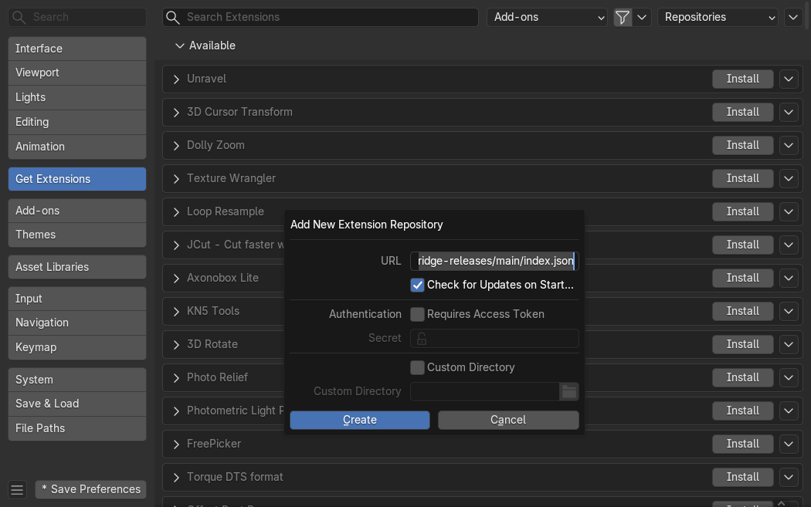
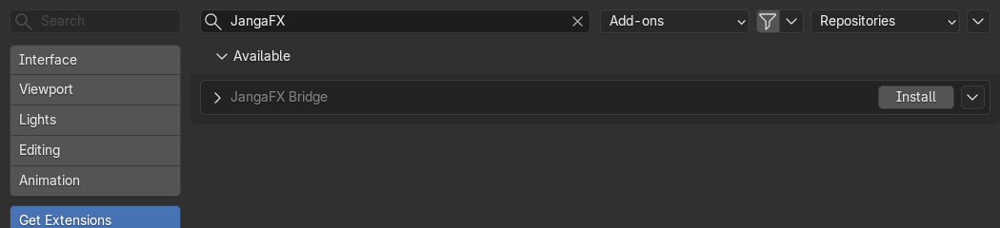
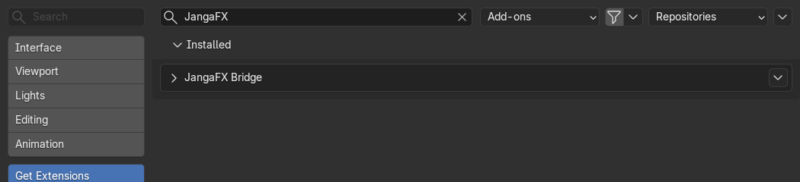
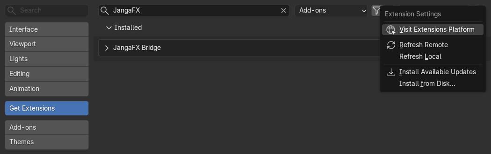
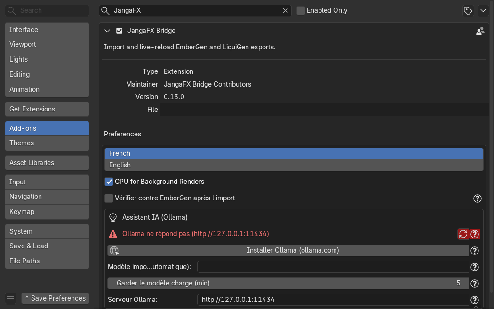

Installation
JangaFX Bridge fonctionne avec Blender 4.5 ou plus récent (testé avec 4.5 et 5.2). Il y a deux façons de
l'installer : depuis le dépôt en ligne (conseillé, les mises à jour arrivent toutes seules) ou depuis un fichier
.zip.
Les captures ci-dessous viennent de Blender 5.2 ; dans Blender 4.5 les fenêtres sont presque identiques.
Installer depuis le dépôt en ligne
C'est la méthode conseillée : Blender vérifie à chaque démarrage s'il existe une nouvelle version de l'add-on.
1. Autoriser l'accès à Internet
Ouvrez Edit > Preferences (Édition > Préférences), puis la section Get Extensions. Si Blender affiche le message ci-dessous, cliquez sur Allow Online Access (autoriser l'accès en ligne). Sans cela, Blender ne peut ni télécharger l'add-on ni ses mises à jour.


2. Ouvrir la liste des dépôts
Toujours dans Get Extensions, cliquez sur le menu Repositories (en haut à droite). La liste des dépôts s'ouvre ; cliquez sur le bouton + à droite de la liste, puis choisissez Add Remote Repository (ajouter un dépôt distant).


3. Ajouter le dépôt JangaFX Bridge
Dans la fenêtre Add New Extension Repository :
- collez cette adresse dans le champ URL :
https://raw.githubusercontent.com/ThomasDM40-dev/jangafx-bridge-releases/main/index.json
- cochez Check for Updates on Startup (chercher les mises à jour au démarrage) ;
- laissez le reste tel quel et cliquez sur Create.


4. Installer l'add-on
Tapez JangaFX dans la barre de recherche de Get Extensions : JangaFX Bridge apparaît dans la partie
Available. Cliquez sur Install.


Une fois installé, il passe dans la partie Installed et il est activé.


Si le bouton Save Preferences (en bas à gauche) affiche une étoile, cliquez dessus pour garder le dépôt la prochaine fois (sauf si l'enregistrement automatique des préférences est activé).
Recevoir les mises à jour
Avec Check for Updates on Startup coché, Blender regarde au démarrage si une nouvelle version existe. Quand c'est le cas, la section Get Extensions propose de la mettre à jour (bouton Update, ou Install Available Updates dans le menu en haut à droite). Redémarrez Blender après une mise à jour.
Installer depuis un fichier zip
Sans Internet, ou pour installer une version précise :
- téléchargez le fichier
jangafx_bridge-<version>.zipsur la page des versions : https://github.com/ThomasDM40-dev/jangafx-bridge-releases/releases (ne le décompressez pas) ; - dans Edit > Preferences > Get Extensions, ouvrez le petit menu tout en haut à droite (la flèche v) ;
- choisissez Install from Disk... et sélectionnez le fichier
.zip.


Avec cette méthode, les mises à jour ne sont pas automatiques : refaites la même chose avec le nouveau .zip.
Vérifier que l'add-on est actif
Dans Edit > Preferences > Add-ons, cherchez JangaFX : la case de JangaFX Bridge doit être cochée.
Dépliez la ligne pour voir ses préférences :
- French / English : langue du rapport de projet et des fenêtres d'aide ;
- GPU for Background Renders : les vérifications et Auto Match utilisent la carte graphique choisie dans Preferences > System (voir Dépannage) ;
- Vérifier contre EmberGen après l'import : voir Vérifier tout seul après l'import ;
- Assistant IA (Ollama) : voir L'assistant IA.


Ensuite, passez aux Premiers pas.